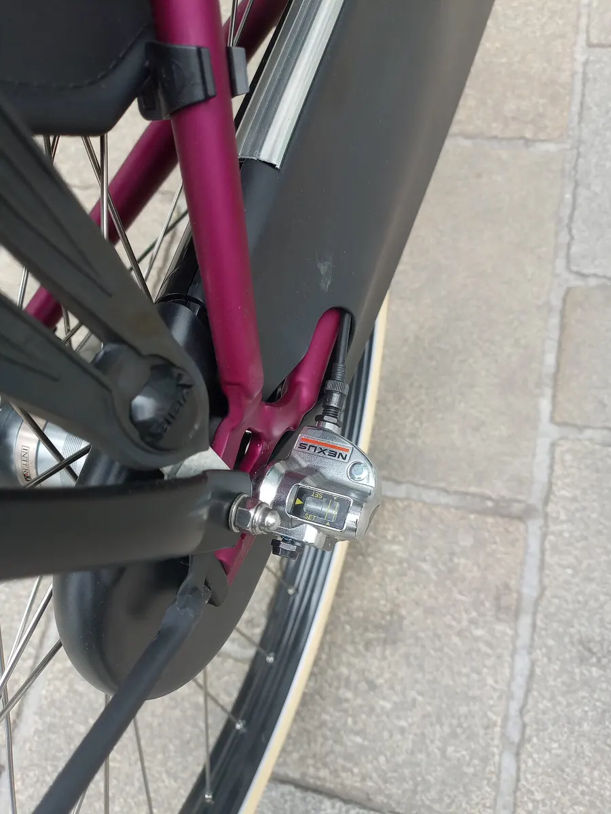

Инструкция · Колёса и шины
Замена камеры: Shimano Nexus 3 с рычагом на оси («клик-бокс», bell crank)
На части трёхскоростных Nexus трос подключается не к кассетному соединению, а к пластиковому рычагу-коробке на правом конце оси (bell crank, в народе «клик-бокс»). Рычаг нажимает на толкатель (push rod) внутри оси. Порядок снятия у разных версий немного различается — если есть инструкция Shimano для вашей модели, сверяйтесь с ней.

⚠ Важно
- Если толкатель потерян или погнут, втулка не будет переключаться — его можно купить отдельно у дилера Shimano.
- Без закреплённой тормозной тяги тормоз не работает.
Пошагово
- 1Переключитесь на ту передачу, при которой трос максимально ослаблен (ориентируйтесь по натяжению троса у рычага).
- 2Отсоедините трос от рычага-коробки или выньте рубашку из упора — так, чтобы коробку можно было снять.
- 3Снимите коробку с оси: у большинства версий её фиксирует гайка или защёлка; после ослабления коробка снимается с конца оси. Осторожно: внутри оси остаётся тонкий толкатель — не потеряйте его и не погните.
- 4Отсоедините тормоз: тягу ножного или роллерного тормоза от нижнего пера, тормозной трос — от тормоза.
- 5Если есть кожух цепи — снимите его заднюю часть. Ослабьте гайки оси (обычно 15 мм), запомните порядок стопорных шайб, снимите цепь и выньте колесо.
- 6Замените камеру (подробно).
- 7Установите колесо: стопорные шайбы выступами в пазы дропаутов, цепь с небольшим провисом, колесо по центру. Затяните гайки оси (Shimano для Nexus: 30–45 Н·м).
- 8Закрепите тормозную тягу хомутом на пере и подключите тормозной трос.
- 9Проверьте, что толкатель на месте, установите коробку на ось и закрепите, подключите трос.
- 10Проверьте настройку по меткам в окошке коробки так, как указано в инструкции Shimano для вашей модели. Если инструкции нет — барабаном натяжения троса добейтесь чёткого включения всех трёх передач без проскальзывания под нагрузкой.
- 11Проверьте все передачи и тормоз перед выездом.